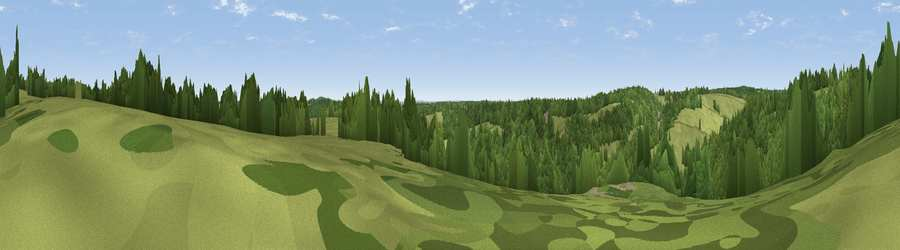

Viewpoint near Fawley
#44163 in England · top 77% of its area beats it · near FawleyWhere it is
The exact computed spot (SU 74875 84825). Click the marker for map links.
The view, rendered

A 360° render of this exact spot computed from the terrain model, tree cover and land cover — summer colours, afternoon light, calibrated against photographs of famous viewpoints. Real trees, hedges and buildings will differ in detail.
The panorama
Grey silhouette: terrain skyline in each direction (720 bearings, Earth curvature and refraction included). Dashed green: skyline with trees (+15 m) and buildings (+8 m) as obstacles. Blue strip: how far the ground is visible on each bearing.
Where the view opens
Wedge length = distance to the farthest visible ground on that bearing (vegetation-aware). Rings at 10, 25 and 50 km.
What fills the view
53% woodland · 43% grassland · 2% cropland · 2% built-up
Angular shares of the visible panorama (visual magnitude), not map area. Landscape diversity 0.37 (0–1 Shannon).
Key numbers
More beautiful places nearby
The staircase of upgrades: each row has a higher view potential than everything closer. Driving times are estimates from straight-line distance, calibrated against real road routing — check an actual route before setting out.
| Place | Direction | Drive | Score |
|---|---|---|---|
| Viewpoint near Rotherfield Greys | WSW · 1 km | ~3 min | 18.3 |
| Viewpoint near Henley-on-Thames | SE · 1 km | ~3 min | 23.5 |
| Viewpoint near Fawley | NNW · 2 km | ~6 min | 39.3 |
| Viewpoint near Fawley | NNW · 4 km | ~8 min | 48.8 |
| Viewpoint near Cookley Green | NW · 9 km | ~18 min | 68.5 |
| Viewpoint near Watlington | NNW · 10 km | ~19 min | 70.6 |
| Viewpoint near Lewknor | NNW · 11 km | ~21 min | 70.8 |
| Viewpoint near Lewknor | N · 13 km | ~23 min | 74.4 |
51.55735, -0.92136 · source: screening · position refined by local search. Computed location — check access rights before visiting.